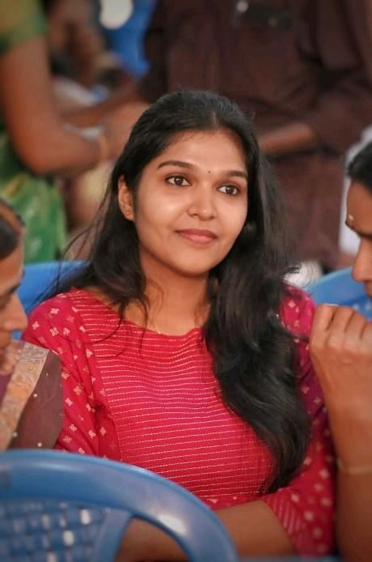
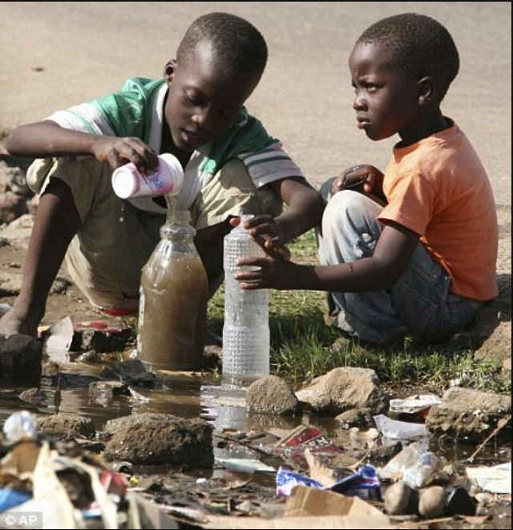
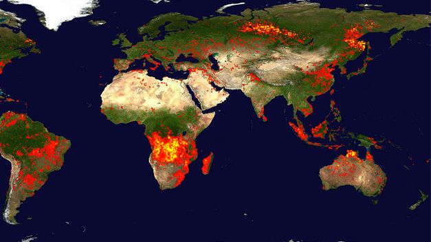
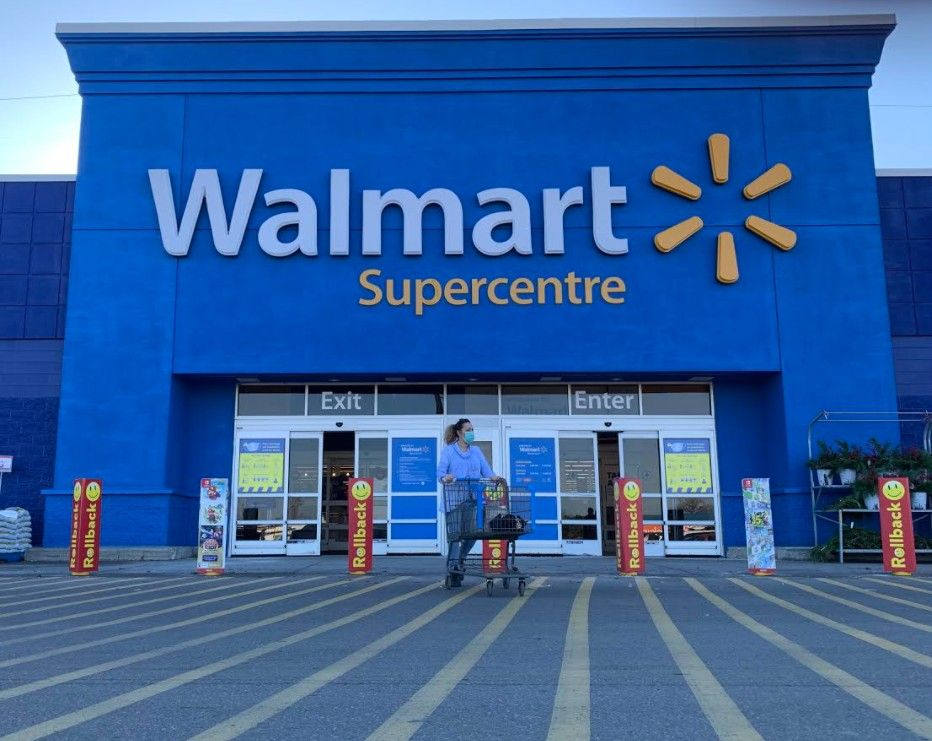

Driven by the logical precision of a Master’s in Physics, I bridge the gap between complex data and scalable solutions. With expertise in Data Science and Full Stack Development , I engineer intuitive, high-performance web applications built on analytical rigor.
My story begins in the lecture halls of Coimbatore at Nehru Arts and Science College. Beyond learning the laws of the universe, I trained my mind to deconstruct complex problems and find elegant, logical solutions. I completed my Master’s in Physics at Hindustan Arts and Science College in 2022, developing a unique analytical perspective grounded in systematic problem-solving.
I transitioned my analytical rigor into the field of data science, starting as a Business Analyst at M.A. Traders, where I implemented data-driven credit policies and optimized inventory management. This foundation led to a Data Science Internship at Luminar Technolab, where I leveraged Python and SQL to solve complex problems. My project portfolio includes developing high-impact models for Brain Tumor Prediction and Water Potability Analysis. Uniquely, I bridge the gap between Physics and Materials Informatics, having developed deep learning models to classify satellite imagery for disaster prediction and remediation. I also have hands-on experience in Computer Vision (Yoga Pose Detection) and data visualization using Power BI and Tableau to drive actionable insights.
Driven by the desire to build the tools people interact with daily, I integrated my analytical skills into Full Stack Web Development. I now view code as a way to express logical precision—architecting robust back-end systems and designing responsive front-ends that bridge the gap between data-driven insight and seamless execution.
Luminar Technolab
M.A. Traders
Entri
Achieved professional certification in Full Stack Web Development, gaining comprehensive expertise in architecting end-to-end digital solutions from responsive front-ends to scalable back-end infrastructures.
Luminar Technolab (National Council For Technology and Training)
Successfully completed an intensive professional program in Data Science with Python, gaining the expertise to solve complex, real-world analytical problems."
Hindustan College of Arts & Science
My Master’s in Physics from Hindustan Arts and Science College equipped me with a deep foundation in analytical thinking, mathematical modeling, and the ability to deconstruct complex systems into logical, solvable components.
Nehru College of Arts & Science
Foundation in classical mechanics, electromagnetism, and quantum physics with a focus on Bharathiyar University standards.

Distinguishing between potable and non-potable water using high-accuracy classification models.
A Deep Learning project using Artificial Neural Networks (ANN) for early medical diagnosis.
Focused on YOLO and MediaPipe to master poses via AI-driven coaching.

Led the design and deployment of Deep Learning architectures (CNNs) for satellite imagery, enabling efficient decision-making for disaster management and land-use applications.

Developed new interactive Power BI dashboard for exploring Walmart Sales Analysis and Walmart Black Friday sales
Calculated fields, storytelling with data, and creating interactive filters for medical diagnostics.